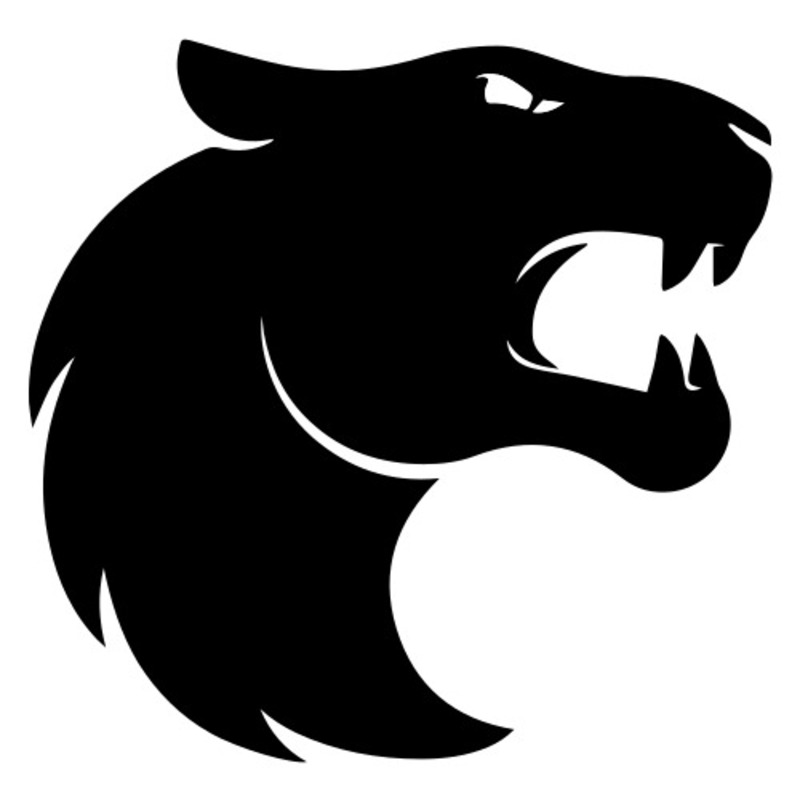
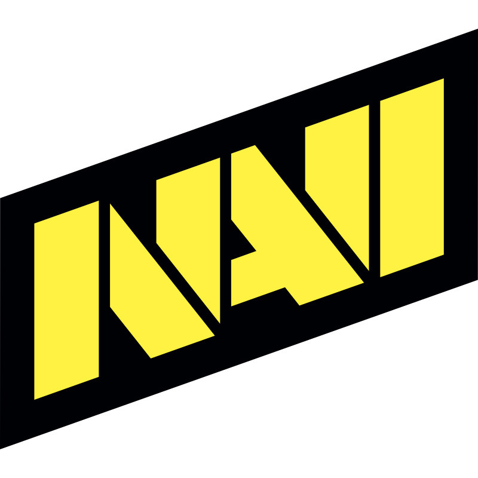
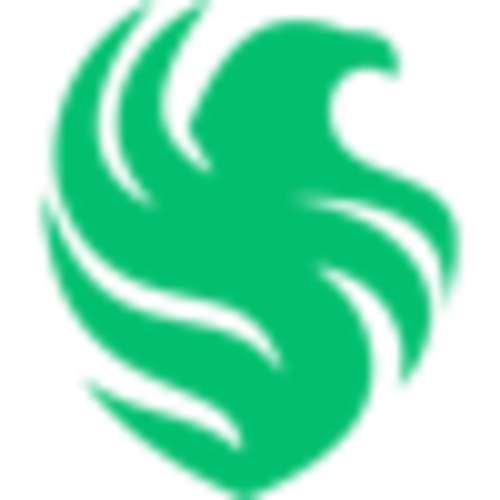
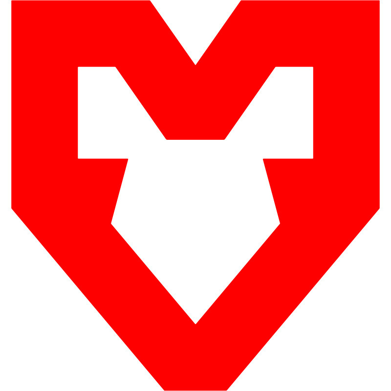
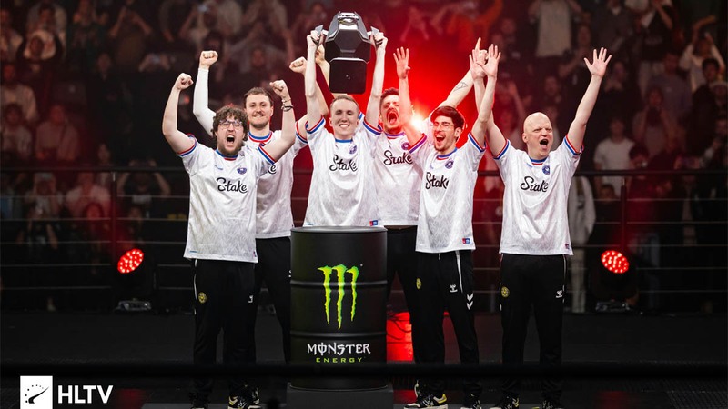
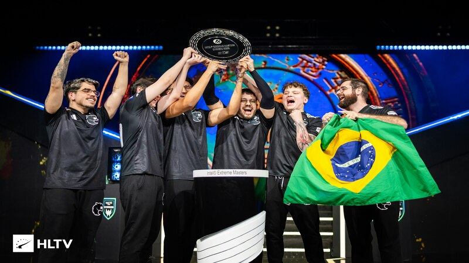
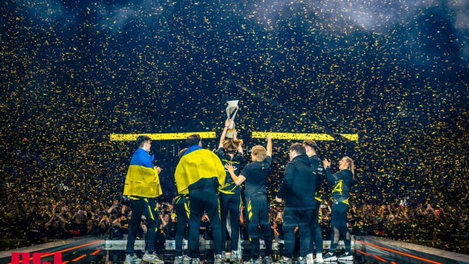
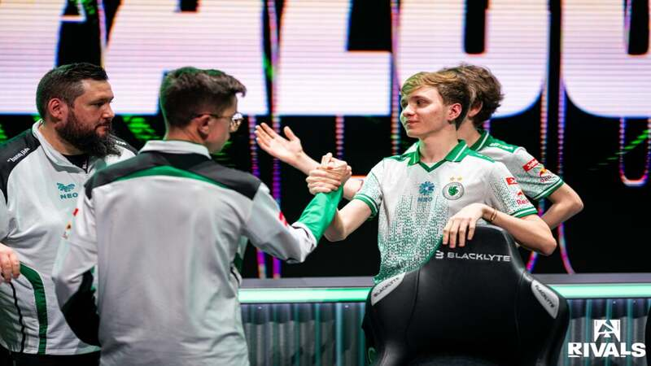

O cenário competitivo de Counter-Strike 2
O cenário de eSports no Brasil cresceu de forma acelerada nos últimos anos, consolidando o país como um dos maiores públicos do mundo, milhões de espectadores, uma comunidade extremamente engajada e uma paixão pelo competitivo que poucos países conseguem igualar.
Dentro desse universo, o Counter-Strike sempre teve papel central. Foi um dos principais responsáveis por popularizar os esportes eletrônicos no país, revelar grandes talentos e colocar o Brasil no mapa competitivo internacional. Desde as versões antigas do jogo, nomes brasileiros já assombravam o mundo, e essa tradição só se fortaleceu com o tempo.
Com a chegada do CS2, essa história não parou, ela evoluiu. Novas gerações de jogadores, maior investimento nas organizações e resultados expressivos em competições globais reforçam o Brasil como uma potência real no cenário mundial. A FURIA é o exemplo mais recente disso: um time que chegou ao topo do ranking global e provou que o Brasil ainda tem muito a dizer.
Para entender esse cenário, é preciso conhecer as equipes que dominam o jogo atualmente. Abaixo estão os cinco times mais bem rankeados pelo HLTV as organizações que definem o ritmo do Counter-Strike 2 competitivo hoje.
Ranking das Equipes
| Equipes | Maior Conquista | Jogador de Destaque |
|---|---|---|
 |
Budapest Major 2025 | ZywOo |
 |
IEM Chengdu 2025 | KSCERATO |
 |
Copenhagen Major 2024 | S1mple |
 |
PGL Bucharest 2025 | M0NESY |
 |
ESL Pro League S19 | XertioN |
| Dados obtidos por: HLTV | ||
The Road to Glory

🏆 StarLadder Budapest Major 2025A Vitality derrotou a FaZe Clan por 3-1 na grande final, tornando-se o primeiro time desde 2019 a defender um título de Major. LIS-SKINSZywOo foi o centro de tudo: conquistou seu terceiro MVP de Major, tornando-se o único jogador na história do CS a alcançar essa marca.

🏆 IEM Chengdu 2025A FURIA venceu a Vitality por 3-0 na grande final, conquistando seu primeiro troféu IEM da história ESL FACEIT Group e provando que era um time capaz de bater o melhor do mundo. O jovem molodoy foi eleito MVP, consolidando-se como um dos nomes mais promissores do CS2.

🏆 GL Major Copenhagen 2024A NAVI conquistou o primeiro título de Major da era CS2, derrotando a FaZe Clan em uma grande final que atingiu mais de 1.8 milhão de espectadores simultâneos. Esports Charts jL foi o MVP do torneio, encerrando a sequência de sete finais decididas em apenas dois mapas.

🏆 PGL Bucharest 2025A Falcons conquistou seu primeiro troféu na história do Counter-Strike ao derrotar a G2 por 3-0 em uma final completamente dominante Esports e o fez de forma improvável: o time começou o torneio com 0-2 no Swiss Stage e se recuperou para chegar à grande final sem olhar para trás. Degster foi eleito MVP do evento, com kyxsan também conquistando seu primeiro título internacional da carreira. Esports News Uma vitória que chegou justamente no momento em que o roster estava prestes a mudar, tornando o troféu ainda mais especial.
 🏆 ESL Pro League Season 19
🏆 ESL Pro League Season 19
A MOUZ derrotou a Vitality por 3-0 na grande final em Malta, tornando-se o primeiro time a vencer três títulos globais da EPL. ESL FACEIT Group Uma vitória que poucos esperavam: a Vitality era a favorita, mas a MOUZ dominou do início ao fim, com siuhy sendo eleito MVP do torneio.
The Faces of The Elite
 ZywOo - O Intocável
ZywOo - O Intocável
Mathieu "ZywOo" Herbaut é o padrão pelo qual todo o CS2 se mede. Com quatro títulos de Melhor Jogador do Ano pelo HLTV (2019, 2020, 2023 e 2025), é o primeiro na história a conquistar o prêmio quatro vezes. Pley Em 2025 conquistou dois Majors e igualou o recorde de 8 MVPs em um único ano, tudo com um estilo inconfundível de eficiência cirúrgica, aparecendo sempre no momento certo. Não à toa, foi eleito o melhor jogador da década pelo Esports Awards.
 KSCERATO - O Pilar Imortal da FURIA
KSCERATO - O Pilar Imortal da FURIA
Kaike "KSCERATO" Cerato é o jogador mais fiel e consistente da história da FURIA. Na organização desde 2018, ele e yuurih são os únicos remanescentes do segundo lineup histórico do time e seguem sendo os pilares da equipe até hoje. Em 2025, liderou o roster com um rating de 1.17 em 352 mapas, sendo o de maior impacto estatístico. Quando o Team Liquid veio com uma proposta em 2024, escolheu ficar, uma decisão criticada na época, mas que se provaria certeira.
 Fallen - O Professor que Voltou ao Topo
Fallen - O Professor que Voltou ao Topo
Gabriel "FalleN" Toledo é uma lenda viva do Counter-Strike. Com mais de uma década de carreira, possuindo dois titulos de Major no cenario. Ele chegou à FURIA em 2023 carregando um legado que poucos jogadores do mundo possuem. Atuando como IGL, sua influência vai além das estatísticas: ao abrir mão da AWP e assumir um papel de âncora, FalleN demonstrou a mesma disposição de evoluir que marcou toda sua carreira. Para o cenário brasileiro, ele é mais do que um jogador, em 2015 foi eleito a pessoa mais influente do e-sports brasileiro, e sua presença na FURIA reacendeu o orgulho de uma torcida que sonha com o título de Major.
 S1mple - O Peso de uma Era
S1mple - O Peso de uma Era
Eleito o melhor jogador do mundo pelo HLTV em 2018, 2021 e 2022, seu domínio entre 2018 e 2021 o colocou em um nível que poucos na história do esporte eletrônico alcançaram. Com 21 MVPs e o título do Major de Estocolmo 2021, construiu um legado que vai além dos números. Para a NaVi foi o rosto de uma era inteira. Para o cenário, é o padrão pelo qual toda uma geração ainda se mede. Prova disso: mesmo após longo período fora das competições, seu retorno atraiu mais de 240 mil espectadores simultâneos em um simples jogo de grupos.
 M0nesy - O Nascido Para Isso
M0nesy - O Nascido Para Isso
Ilya "m0NESY" Osipov começou a jogar Counter-Strike aos 5 anos no computador do irmão e nunca parou de surpreender. Eleito Rookie do Ano em 2022 em sua estreia no Tier 1, foi rankeado o 2º melhor jogador do mundo pelo HLTV em 2024, com apenas 19 anos. Durante sua passagem pela G2 ao lado de NiKo, conquistou seis títulos S-Tier, consolidando uma das duplas mais letais da história recente do CS. Sua chegada às Falcons em 2025 foi a maior transferência da história do Counter-Strike, avaliada em 2.5 milhões de dólares.
 XertioN - O Artilheiro da MOUZ
XertioN - O Artilheiro da MOUZ
Dorian "xertioN" Berman é a personificação do projeto da MOUZ: jovem, formado pela academia do time e hoje indispensável no Tier 1. Seu papel como entry fragger é simples na teoria e brutal na prática: ser o primeiro a entrar no site, limpar os corners e abrir espaço para os companheiros, sem necessariamente sair vivo. Presente pelo segundo ano consecutivo no Top 20 do HLTV, xertioN é parte do núcleo internacional que cresceu junto dentro do sistema da MOUZ HLTV.org e um dos jogadores mais consistentes nas campanhas de título do time.